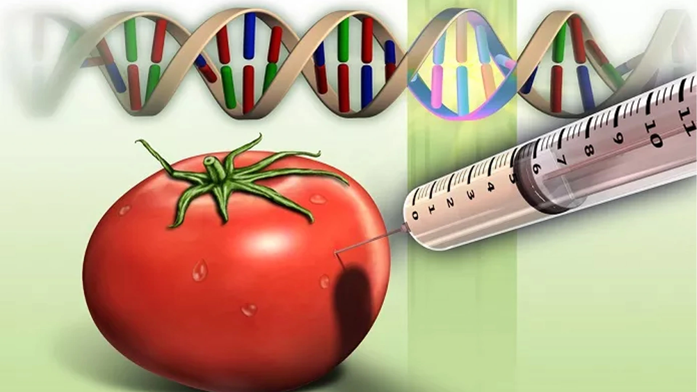

Os alimentos transgênicos apresentam muitos benefícios, porém há controvérsias e também muita desinformação a respeito do assunto, principalmente em relação à saúde humana. Por causa dos agrotóxicos, críticos alegam que o consumo de transgênicos pode desencadear alergias e outras doenças, além de impactar negativamente o meio ambiente.